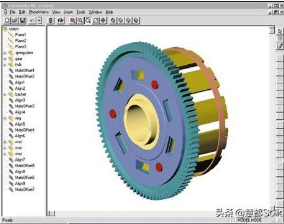
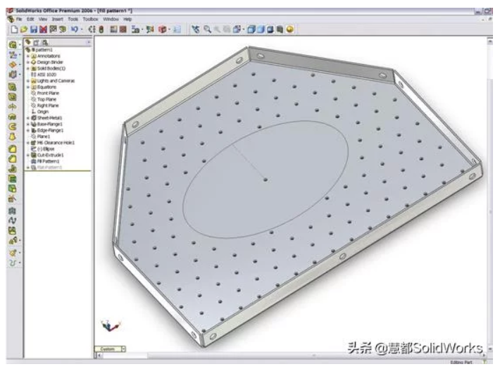

Nx <<
Previous Next >> About
solidworks

1993年
創始人Jon Hirschtick招募了一個工程師團隊，旨在使3D CAD軟體更容易上手。Hirschtick從廣受好評的麻省理工學院二十一點隊的成員中籌得100萬美元，開始了他的新事業。該團隊的目標是構建一個基於Windows平台的易於使用且價格合理的軟體。這在當時真的是革命性的存在，當時所有其他流行的CAD系統都是在Unix上構建的。經過幾年的開發，最初發布的SolidWorks終於來了。
1995年
1.與其他CAD系統的18,000美元相比，SolidWorks的售價僅為4,000美元。
2.該軟體更易於使用：與市場上其他CAD軟體相比，用戶只需3個月的使用經驗就可以輕
3.鬆上手。易用性的很大一部分原因在於它採用了現代著名的Windows介面。
4.模型的可視化是前所未有的。在光線充足的陰影環境中的構建功能與傳統建模空間形成
5.鮮明對比，傳統建模空間僅顯示黑色背景下的線框。
6.我們現在熟悉的類似FeatureManager用於顯示模型的構建歷史。
7.零件，組件和圖紙從一開始就可用。用戶無法在組件中應用配合，但仍可將組件放置到位。

1996年
1.介紹了上下建模。允許使用自上而下的裝配建模方法。
2.用戶現在可以在裝配中使用配合併捕捉動態裝配運動。除了干擾檢測，用戶還可以更輕
3.鬆地驗證形狀，適合度和功能。
4.拖放功能可將一個裝配體零部件移動到另一個裝配體中。部分配置。
5.自動化物料清單。只有一種方法沒有自定義選項，但它很有效。
1997年
1.鈑金功能首次發布。
2.標準庫功能推出。
3.Loft功能現在可以使用引導曲線。
4.SolidWorks 被 Dassault Systemes（達索公司）收購。
1997年二次修改
1.面部圓角介紹。
2.裝配配置。
3.完全可定製的組件爆炸視圖。
4.SolidWorks Viewer作為免費產品推出，可與非CAD用戶共享設計，並在與外部方共享
5.數據時保護智慧財產權。
1998年
1.已發布功能面板，現在與設計庫的功能類似。可以拖放到模型上的預製功能。
2.草圖診斷可幫助用戶理解草圖不適用於特定特徵的原因。
3.Lofts和Sweeps的相切控制。
4.組合件封包(Assembly Envelopes)。
1998二次修改
1.智能配合在建造組件中更多地使用拖放式自動化。
2.隨著用戶不斷建造越來越大的組件，輕量級組件可以幫助提高性能。
3.表面處理工具首次推出。
4.FeatureWorks用於導入文件，能夠更有效地使用來自其他軟體的現有3D數據。
5.首次CSWP考試發布。它是手寫的，並通過郵件發送。
1999年
1.Palm Springs的第一個SolidWorks World。
2.拖動組件時對組件的實時碰撞檢測。
3.3D草圖介紹。
4.管道模塊發布。
5.2D命令模擬器有助於縮小與以前AutoCAD用戶的差距。
2000年
1.發布eDrawings。
2.實現了Hole Wizard接口。
3.表面處理更有用，能夠編織，修剪和延伸表面。
4.SolidWorks Explorer。
5.動態間隙檢測可驗證裝配部件之間的最小間隙。
2001年
1.鏡像組件中的組件。
2.引領互動。以前，在任何CAD系統中，只要選擇了命令，軟體就會在模型頂部顯示整個
3.對話框。SOLIDWORKS開始廢除這一點，並轉向我們現在知道的
4.PropertyManagers，並將陰影標註返回到模型。
5.現在允許靈活的子組件進一步捕捉準確的裝配運動。
6.介紹填充表面命令。
7.DXF / DWG導入嚮導發布。
8.3D Meeting（3D會議），最終在幾個版本之後退出。利用Microsoft Live Meeting並允許與螢幕共享進行實時同步會議。
2001年二次修改

1.運動模擬功能現在可以捕捉組件中移動的組件的實際物理動態。
2.介紹大型裝配模式。
3.實現了2D到3D轉換工具，以便將2D CAD數據輕鬆轉換為功能齊全的3D模型。
4.介紹SolidWorks Office，將常用的插件如PhotoWorks，Toolbox，Utilities和
5.FeatureWorks打包成一個產品。
6.Dassault Systemes收購了SRAC並開始將仿真引入主流設計流程。
2003年
1.COSMOSXpress是第一款Xpress產品，它為每個桌面帶來了簡單的零件驗證。
2.3DContentCentral為用戶提供了一個交互和共享模型的社區。
3.多體零件設計。這是一個非常大的問題，現在是焊接，鈑金和模具設計的基礎。
4.收購了PDMWorks並引入了SolidWorks Office Professional軟體包。開始將PDM作為
5.每個客戶提供的一部分。
2004年
1.介面更新，包括CommandManager，彈出FeatureManager和PropertyManager和
2.ConfigurationManager的管理器視圖選項卡。
3.介紹了Mold Tools（模具工具）和Weldments（焊件）。
4.實施Auto Balloon命令以匹配物料清單物料編號中的balloon編號。
5.限制配合以捕捉更複雜的裝配運動。
6.推出了RealView Graphics，以便隨時提供更逼真的圖像。
2005年
1.繪圖比較，為用戶提供工具來比較兩個圖紙之間的變化。
2.Flex功能。
3.電氣布線，與管道布線一起使用。
4.在圖紙中自動標註，以捕捕捉模型中已定義的尺寸。
5.能夠繪製無限的線條。
6.SolidWorks Rx發布，旨在提供幫助技術支持更好地去識別問題。
2006年
1.發布Smart Components功能，允許為硬體之類的物件安裝智能裝配組件。
2.介紹填充圖案。
3.介紹草圖塊。
4.顯示狀態。
5.設計檢查器，允許用戶根據公司標準動態檢查他們的模型。
6.添加了相機視圖功能。
7.發布SolidWorks Office Premium（白金版）軟體包，包括Routing，COSMOSWorks8.和 COSMOSMotion進行模擬，以及ScanTo3D。

2007年
1.SWIFT工具可幫助設計人員在提供自動化解決方案時動態了解模型存在問題或錯誤的原因。
2.可在組件中使用皮帶，鏈條和齒輪功能。
3.用於表面處理的自由形式命令。
4.介紹Enterprise PDM。
2008年
1.使用新的菜單欄和CommandManager布局對用戶介面進行全面檢修和現代化優化。上
2.下工具欄和快捷工具欄首次可用。所有這些介面組件現在都可以完全自定義。
3.Instant3D，提供拖動和操縱幾何體的功能，可輕鬆測試不同的設計概念。
4.發布TolAnalyst。
5.設計剪貼畫，通過剖析現有數據以便在另一個模型中重複使用，可以更輕鬆地重用現有的2D和3D數據。
6.推出DriveWorksXpress和DFMXpress。
2009年
1.PhotoView360圖像渲染作為第一個渲染器引入，以訪問處理器的多核功能。
2.SpeedPak現在可用於簡化裝配中的組件。
3.為追求更高目標，所以引入傳感器。
4.CircuitWorks發布並添加到SolidWorks Office Premium（白金版）軟體包中。
5.發布3DVIA Composer。
2010年
1.現在提供可持續發展方案，幫助用戶了解其設計對環境的影響。
2.快速標註尺寸使得創建細節圖更加容易。
3.介紹基於事件的運動模擬。
4.首次提供滑鼠手勢快捷鍵。
5.現在可以進行多體鈑金建模。
2011年
1.PhotoView360完全集成到SolidWorks介面中。
2.現在可以使用Walk-through（走查）功能。
3.引入了Defeature工具以幫助限制模型中的智慧財產權數量。
4.現在可以在Simulation中使用平面簡化。
5.自動排列圖紙中的尺寸。
2012年
1.方程式編輯器經過徹底檢修後，更加用戶友好。
2.介紹Large Design Review。
3.Feature Freeze現在可以讓用戶更好地控制性能。
4.鈑金增強：邊線法蘭的更多選擇，引入掃描法蘭，使用的成型工具更加人性化。
5.發布成本計算加載項。
2013年
1.View Orientation有一個對話框，不再只是在工具欄上了。還引入了選擇器多維數據集
2.以及保存視圖功能以便之後使用。
3.以前的版本文件互操作性：2013文件現在可以在2012 SP5中打開。
4.介紹Conic草圖實體。
5.相交功能。
6.Customer Portal（客戶門戶網站）上提供了CAD Admin Dashboard（CAD管理員儀錶板）。
2014年
1.能夠通過上下工具欄快捷方式添加標準配合。
2.替換草圖實體使用戶能夠用新的實體替換舊實體並仍然維護下游引用。
3.推出了鈑金中的Lofted Bend功能。
4.能夠創建Conic Fillets（圓錐倒角）。
5.樣式樣條草圖命令。
6.自動縮放第一個草圖。現在，在草圖上創建第一個維度時，所有實體都會自行調整大小
7.以進行縮放。
8.能夠配置結構成員配置文件。現在允許配置輪廓草圖，這大大改變了需要組織的文件數量。
9.MySolidWorks作為能夠提供自學培訓以及所有SolidWorks的在線資源社區發布。
2015年
1.動態參考可視化，幫助用戶了解父/子關聯。
2.引入了選擇集，以便於重複使用幾何選擇組合。
3.能夠直接從SolidWorks進行3D列印。
4.Simulation中的疲勞分析。
5.Profile center mate（輪廓中心配合）。
6.發布SolidWorks MBD。
2016年
1.用戶介面重新設計，包括更好地支持高解析度顯示器。
2.藍色/灰色盤默認採用傳統配色方案。
3.引入了選擇麵包屑，使相關命令更易於訪問。
4.實現Mate Controller工具，以更加可訪問的方式捕捉裝配定位。
5.能夠全局替換失敗的配合實體。
6.介紹Thread功能。
7.發布PDM Standard（標準版）並添加到SolidWorks Professional專業版軟體包中。
8.SolidWorks Visualize作為獨立的圖片渲染應用程式發布。
2017年
1.引入3D互連以簡化不同文件類型與SolidWorks的協作。
2.Asset Publisher具有ground plane（地層）和magnetic mates（磁配對），可輕鬆實現
3.大型裝配布局。
4.引入了Advanced Hole（高級孔）功能。
5.增強了Wrap功能，可在更多類型的面選擇上創建幾何體。
6.陰影草圖輪廓增強選擇和操作功能。
2018年
1.SolidWorks啟動時的歡迎對話框。
2.用戶設置現在可以登錄。新發布的在線許可也可以遵循此登錄，在需要在多台計算機上
3.使用SolidWorks時為用戶提供另一種選擇。
4.選擇幾何圖形，允許用戶忽略幾何圖形並在其上選擇其他實體。
5.引入了標籤和插槽功能，自動執行以前在鈑金和焊件中常用的手動方法。
6.能夠鏡像3D草圖中的實體。
7.首次使用筆，觸屏和基於手勢的草圖繪製功能。
8.引入拓撲仿真分析。
2019年
1.顯著改進裝配性能。
2.Silhouette defeature命令，簡化了從模型中刪除細節以提高性能或保護智慧財產權的過程。
3.能夠按狀態對mates進行分組。
4.部分倒角和圓角。
5.將圖像轉換為網格/凹凸貼圖，從圖像文件創建實際的3D幾何體。
直至現今，SolidWorks 自成立以來一直在不斷優化3D CAD操作。強大的新功能和新產品的發布，使SolidWorks真正用行動證明他們仍然保持著最初使命：使CAD軟體更易於使用，可以讓每個人都能夠輕鬆使用。
Nx <<
Previous Next >> About